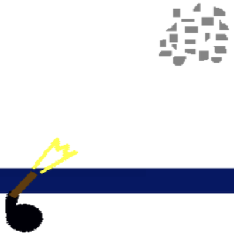

実装機能
|  |
銃を撃つ機能 今後のゾンビをクリックすると、ピストルを撃ち、そのゾンビを制圧します。 これにより、ゾンビが一番下に近づくのを防ぐことができます。 |

|
スキルを使う機能 一定時間が経過してスキルゲージがいっぱいになったら、スキルを使ってゾンビを一気に制圧できます。 |
|
ゾンビが近づく機能 ゾンビが下に近づいています。 一番下に達すると、ライフが消費されます。 |
背景と目的
高校で校内Scratch大会がオープンしたことがあります。 創造的なゲームを作って人々にサービスを提供するために、ゲーム開発者になることに備えて私だけのゲームを制作して出品することになりました。
高校で校内Scratch大会がオープンしたことがあります。 創造的なゲームを作って人々にサービスを提供するために、ゲーム開発者になることに備えて私だけのゲームを制作して出品することになりました。
学んだこと
- Scratchでゲームを実装する方法を学びました。
進行手順
- 図書館でScratchの本を借りて、必要な例だけを選んで実行しました。
- Scratch本の例を参考にして、ゾンビをクリックして制圧すること、ゾンビが壁まで近づくとライフを減らすこと、スキルゲージが少しずつ上がるなど、必要なものを少しずつ実装していきました。 実際、純粋なプログラミングでゲームを作るのは初めてだったので、悩みをたくさんしました。
- これまでに実装したものを合わせてコードを修正しました。
- このようにして目的のプログラムを実装できました。
能力強化のために最も努力したこと
Scratchによる創造的なゲーム制作
Scratchによる創造的なゲーム制作
全体構造

使用技術
Scratch
Scratch
開発環境
Scratch
Scratch
追加の説明
- 2011年、郡浦eビジネス高校スクラッチ大会に出品して優秀賞を受賞しました。
- ソースコード